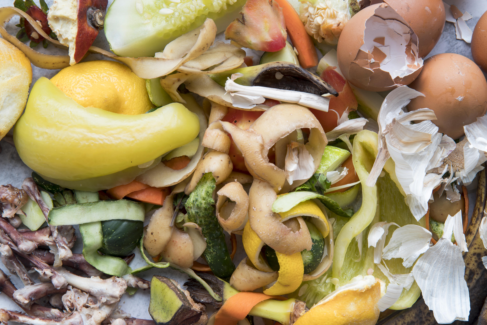

Tons of edible food are thrown away every day.
Food waste can also have a negative impact on the environment and the people living in it.

What if this could've been someone's meal?.
The Waste Is Real. You can make a difference.
Each year, about 1.3 billion tons of food are wasted. This contributes to global hunger, poverty, and climate change. As highlighted in the UN's Sustainable Development Goal 12.3, food waste is increasingly becoming an issue. We need to take immediate action and stop ignoring this critical problem.
Americans waste about 60 million tons of food every year.
Facts from Recycle Track Systems